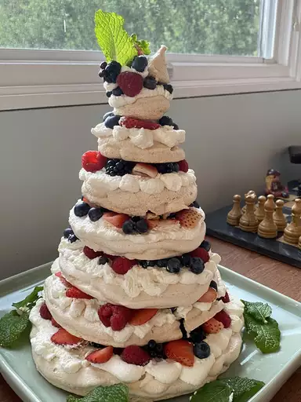

Come On Ova For Pavlova Recipe

FANTASTIC. Growing up in Australia this dish was part of our national identity, but here in the US I could just never get it right
Pavlova is an elegant dessert made with a crisp white meringue layer filled with whipped cream and fresh fruit. To prevent your meringue from being flat and grainy, beat the egg whites until stiff but not dry. Overbeaten egg whites lose volume and deflate when folded into other ingredients. Also, when mixing in sugar, add about 1 tablespoon at a time, beating well after each addition. Then beat until meringue is thick, white, and glossy. Make sure that no trace of grease or egg yolk gets into the whites.
Pavlova Ingredients
- 4 large egg whites
- 1 ¼ cups white sugar
- 2 teaspoons cornstarch
- 1 teaspoon vanilla extract
- 1 teaspoon lemon juice
- 1 pint heavy cream
- 6 kiwi, peeled and sliced
Step by Step
- Preheat the oven to 300 degrees F (150 degrees C). Line a baking sheet with parchment paper; draw a 9-inch circle on the parchment paper.
- Beat egg whites in a large bowl until stiff but not dry. Gradually add sugar, about 1 tablespoon at a time, beating well after each addition. Continue beating until thick and glossy. Gently fold in cornstarch, vanilla extract, and lemon juice.
- Spoon mixture inside the circle drawn on the parchment paper. Working from the center, spread mixture toward the outside edge and build the edge slightly. This should leave a slight depression in the center.
- Bake in the preheated oven until meringue is dry and sounds hollow when tapped, about 1 hour. Cool on a wire rack.
- Beat heavy cream in a medium bowl until stiff peaks form; set aside. Remove meringue from the parchment paper and place on a flat serving plate. Fill center of meringue with whipped cream and top with kiwi slices.
Top
Home